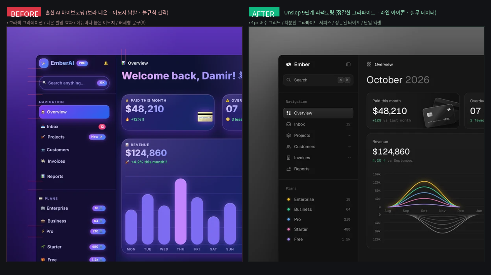
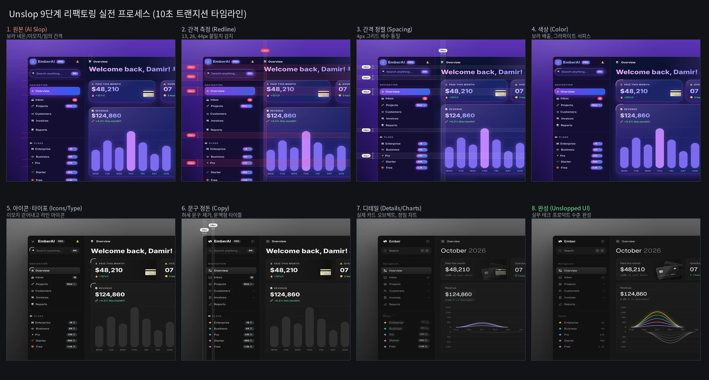

보라색 네온, 이모지 남발, 어긋난 마진을 넘어 실리콘밸리 테크 프로덕트 수준의 시각적 완성도(Craft)를 입히는 실전 오픈소스 Unslop 분석과 체크리스트
요즘 대학가와 개발 현장에서 클로드 코드(Claude Code), v0, 볼트(Bolt) 등을 활용한 바이브코딩(Vibe Coding) 열풍이 거셉니다. 자연어로 몇 마디 던지면 단 10분 만에 데이터베이스가 붙고 인증이 돌아가는 풀스택 웹 애플리케이션이 완성됩니다. 저 역시 지난 1년간 대학 행정 시스템 22종을 직접 배포했고, 얼마 전 교내 해커톤 올인원 플랫폼(3만 줄 풀스택)을 단 하나의 URL로 구현해 냈습니다.
하지만 바이브코딩을 시도해 본 사람이라면 누구나 한 번쯤 마주하는 뼈아픈 장벽이 있습니다. 바로 "누가 봐도 AI가 대충 짜준 티가 나는 화면", 이른바 'AI 슬롭(AI Slop)' 문제입니다.
화면을 띄우자마자 시선을 강탈하는 요소들이 있습니다:
Supercharge your AI workflow!!, Welcome back, Boss! 👋)mt-[13px], px-[22px])기능은 완벽하게 돌아가는데, 겉모습이 흔해 빠진 'AI 양산형 토이 프로젝트'처럼 보이기 때문에 실무 도입이나 보직자 보고, 엔터프라이즈 납품 단계에서 번번이 "신뢰감이 떨어진다"는 평가를 받게 됩니다. 기능의 바이브코딩을 넘어 '감(Craft)의 바이브코딩'으로 넘어가기 위해 반드시 풀어야 할 숙제였습니다.
이 문제를 가장 우아하고 기술적인 방식으로 정면 돌파한 오픈소스가 등장했습니다. 바로 디자이너 다미르 소콜로프스키(Damir Sokolovsky, @heydamir)가 공개한 Unslop(언슬롭) 프로젝트(github.com/heydamir/unslop)입니다. 공개 직후 글로벌 개발자 커뮤니티와 X에서 폭발적인 반응을 얻으며 순식간에 1만 2천 개 이상의 스타(Stars)를 기록했습니다.
"슬롭(Slop)을 걷어내는 것은 절반일 뿐이다. 진정한 크래프트(Craft)는 크롬(배경·버튼·테두리)을 극도로 차분하게 가라앉히고, 프로덕트 본연의 콘텐츠 한두 곳에만 시각적 무게를 싣는 데서 온다."
Unslop은 단순히 테마 색상만 바꾸는 라이브러리가 아닙니다. 60여 개에 달하는 AI 슬롭 감지 체크리스트를 바탕으로, 실무 수석 디자이너가 주니어의 시안 위에 빨간 펜으로 레드라인(Redline)을 긋듯 코드를 9단계 순서대로 직접 뜯어고쳐 주는 디자인 하네스(Design Harness)입니다.
Unslop이 화면을 재구성할 때 거치는 9단계 순서는 디자인 엔지니어링의 정수입니다. 순서가 뒤섞이면 안 됩니다. 리듬(간격)이 잡혀야 글자가 읽히고, 문구(길이)가 정해져야 타이포와 배치가 결정되기 때문입니다.
| 순서 | 패스 (Pass) | Before (흔한 AI Slop) | After (Unslop 리팩토링 후) |
|---|---|---|---|
| 1 | 간격 (Spacing) | 13px, 26px, 44px 임의 마진 |
4px 그리드 배수(8, 12, 16, 24, 32px)로 통일 |
| 2 | 색상 (Color) | 보라색 배경, 네온 글로우, 과도한 색채 | 차분한 그라파이트 서피스 + 단일 엑센트 |
| 3 | 아이콘 (Icons) | 메뉴·카드마다 붙은 이모지(✨, 🚀) | 16~18px 통일 규격의 라인 아이콘(SVG) |
| 4 | 문구 (Copy) | "Welcome back! 👋", "!!", "Search..." | 문맥형 타이틀 ("October 2026"), 명확한 기준 |
| 5 | 타이포 (Type) | 800~900 과도한 볼드, 대문자 트래킹 | 400~500 굵기, Sentence case, tabular-nums |
| 6 | 배치 (Layout) | 좁은 박스에 어색하게 갇힌 화면 | 실제 데스크톱 비율 (260px 사이드바 + 넓은 본문) |
| 7 | 디테일 (Details) | 무지개색 막대 차트, 네온 테두리 | 6~10% 헤어라인 테두리, 정밀 SVG 스플라인 곡선 |
| 8 | 시각요소 (Visuals) | 의미 없는 3D 구체(Glossy Orb) | 실제 서비스 데이터(결제 카드, 지표) 오브젝트화 |
| 9 | 모션 (Motion) | 깜빡이는 animate-pulse, 과한 바운스 |
목적이 있는 부드러운 호버 트랜지션만 허용 |
실제 Unslop의 표준 테스트 대시보드(EmberAI)를 9단계 룰에 따라 리팩토링한 샘플을 통해 전후 차이를 정밀 비교해 보았습니다.

Before 화면의 문제점:
bg-gradient-to-b from-[#5b34b8]) 때문에 장시간 업무를 볼 수 없습니다.After 화면의 변화:
#0b0c0e)으로 정리되고, 카드는 1px 헤어라인 테두리(border: 1px solid rgba(255,255,255,0.07))로 정돈되었습니다.EmberAI PRO라는 거창한 로고 대신 Ember Operations라는 정갈한 실무 타이틀이 자리 잡았습니다.Unslop의 가장 놀라운 지점은 코드가 뚝딱 바뀌는 것이 아니라, 각 패스가 순차적으로 적용되며 화면이 변하는 과정을 Playwright와 ffmpeg를 통해 10초짜리 영상으로 생성해 준다는 점입니다.

13px, 26px, 44px)을 빨간선으로 측정합니다.클로드 코드(Claude Code)를 사용하고 있다면 세팅은 1분도 걸리지 않습니다:
# 1. Unslop 오픈소스 클론 및 스킬 폴더 등록
git clone https://github.com/heydamir/unslop
mkdir -p ~/.claude/skills && cp -r unslop/skills/unslop ~/.claude/skills/
# 2. 클로드 코드 실행 후 원하는 화면에 명령어 실행
claude
> /unslop this dashboard
> /unslop my landing page and make the story video만약 CLI 도구를 직접 설치하기 어려운 환경이라면, Unslop의 핵심 룰셋(Signs of Slop)을 복사하여 시스템 프롬프트나 프롬프트 하네스에 한 줄만 추가해도 AI의 산출물 퀄리티가 완전히 달라집니다:
"보라색 그라데이션, 네온 글로우, 이모지 라벨, 감탄사(!!)를 일절 배제하라. 4px 배수 그리드와 차분한 그라파이트 서피스(#131417), 16px 라인 아이콘, 그리고 하나의 엑센트 컬러만 사용하는 B2B 엔터프라이즈 디자인 원칙을 엄격히 적용하라."
대학에서 교원 연수를 진행하거나 학생들에게 바이브코딩을 가르칠 때, 저는 늘 이렇게 강조합니다.
"소프트웨어의 기능은 코드가 증명하지만, 소프트웨어의 신뢰는 첫 화면의 디테일(Craft)이 결정한다."
사용자가 화면을 열었을 때 "아, 이거 AI가 만든 거구나"라고 느끼는 순간, 그 뒤에 돌아가는 3만 줄의 정교한 백엔드와 데이터 파이프라인조차 가볍게 여겨질 수 있습니다. 반대로, 절제된 레이아웃과 차분한 컬러, 칼같이 정렬된 폰트와 여백을 마주하면 사용자는 비로소 시스템을 믿고 자신의 데이터를 맡기게 됩니다.
Unslop은 AI 시대에 코딩을 시작한 모든 비개발자와 교수, 1인 창업가들에게 '디자이너의 감각'을 무기화해 주는 훌륭한 나침반입니다. 오는 11월 13일 부산외국어대학교 교수 연수에서도 이 'AI 슬롭 제거 실전 팁'을 핵심 시연으로 선보일 예정입니다.
바이브코딩의 진정한 힘은 '빨리 만드는 것'에 그치지 않고, '누구보다 완성도 높게 끝까지 책임지는 것'에 있습니다.